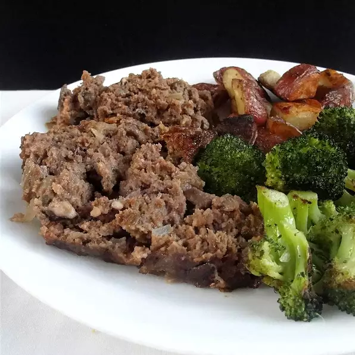

The World's Famous One Of a Kind Mushroom Meatloaf Recipe

This is our special Mushroom Meatloaf recipe
Next up we got our special one of a kind Mushroom Meatloaf recipe that can't be matched made from ground beef,
mushrooms,
fresh bread crumbs, minced onion, ketchup, eggs etc also followed with detailed instructions to get
that
finishing touch down to perfection for an unforgettable family dinner.
Ingredients
- 2 pounds lean ground beef
- 1/2 pound fresh mushrooms, all minced except for 6
- 3/4 cup fresh bread crumbs
- 1/2 cup minced onion
- 1/2 cup ketchup
- 2 eggs, beaten
- 1 1/2 teaspoons salt
- 1/2 teaspoon ground black pepper
Steps
- Preheat oven to 350 degrees F(175 degrees C).
- In a large mixing bowl, combine ground meat, minced mushrooms, bread crumbs, onion, ketchup, eggs,
salt and
pepper. Mix well. Spread 1/2 of the mixture into the bottom of a loaf pan. Arrange 6 whole mushrooms stem
down
into meat. Top with rest of meat, patting to combine both halves.
- Bake for 1 hour and 45 minutes, or until done. Internal temperature should measure 160 degrees F(70 degrees C)
when done.